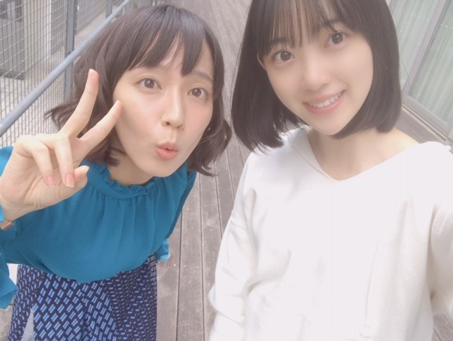

2019/0331Sun目玉焼き食べたくなるよね
ホットギミック オフショット〜✨
以前から憧れていて大好きな吉岡里帆さんと♪

2人だけで撮影させていただいたシーンもあり、緊張しましたが合間にお話しをしたり、笑顔が本当に可愛くて優しくて益々大好きになりました☺︎
また御一緒できるように私も頑張ります！
公式Twitter
公式Instagram
開設されました！
フォローよろしくです☺︎
そしてTGCありがとうございました〜！
歓声も凄く嬉しくてステージからうちわやボードもたくさん見えました✨✨
SONYUNARAさんの洋服、ポップで可愛かった〜
TWICEさんの東京ドームライブを前日に観に行っていたのもありステージ曲がTWICEさんだったので更にノリノリるんるんでした♪
(TWICEさんのライブ衣装ずっと可愛かった...)

久しぶりに伊織に会いました！！わ〜い
一緒のステージ立てて嬉しかったな！
メイクは今回も自分でしました〜
テーマは春オレンジなオルチャンメイク♡
(裏テーマは、ひよこさん)
まず肌は愛用ファンデーション...ipsaファウンデイションアルティメイトでマットに仕上げます
眉毛はペンシルで並行太眉に描いてからKATEの3DアイブロウカラーLB-2を塗ります(明るめ眉がかわいい)
そしてアイメイク
シャドウはとにかくラメ！！！
最近ライブとかで付けてるラメ感が最高なアイシャドウ...ホリカホリカ ピースマッチングシャドウFBE01
をまぶたの二重幅全体に指で塗ります
最近はグリッターラメが気になっています♡
ミナちゃんの東京ドームライブ1日目のピンクラメまぶたがお人形さんすぎてかわいすぎて...
マスカラは茶色で下まつげもしっかり塗ります
目尻の三角ゾーンにはDIORバックステージアイパレット001ウォームのMATTE OCHRE(1番下列の真ん中の色)を小さい筆で塗ります
その流れでうすーく涙袋ゾーンにも同じ色を塗って目の縦幅を広げます
チークはイニスフリーの18番です！
ラメ入りオレンジが日本人にも肌馴染みが良くてCLINIQUEとCHICCAのチークもお気に入りだけど最近はイニスフリーも使ってます☺︎
唇はSUQQUのモイスチャーリッチリップスティック07を塗った上からRMKリップジェリーグロス04をたっぷり塗って完成！
お仕事でもオフの日でもその日の服や髪型、天気、ブーム、気分でメイクを変えるのがすきです☺︎
女の子を目一杯楽しみたいし、おばあちゃんになっても日々"可愛くなる！"ことに貪欲に生きていくのがマイルールです✨
握手会やコメントでメイクについての質問をよくいただくのでいつか写真集やフォトブックを出させていただける時がありましたら色んな日のメイクやヘアアレンジをもっと詳しく紹介できたらいいなぁ〜

ではははは
2019/03/31 20:00
コメント(366)
みおな〜♡
さいきんみおなとおそろのボブにしたの！♡
だいすきだあ！
さいきんみおなとおそろのボブにしたの！♡
だいすきだあ！
ブログ更新ありがとうございます！
今回の握手会は時間的に行けなかったけど、次こそは必ず未央奈さんの列に並ぼうと思います。これからも頑張ってください
今回の握手会は時間的に行けなかったけど、次こそは必ず未央奈さんの列に並ぼうと思います。これからも頑張ってください
未央奈～❤️
握手会お疲れさま！！
色々なお仕事がんばっていますね。
いつでも応援してるし、尊敬してます！
今週も頑張って、来週日曜はだいたいぜんぶ展に行ってくるね♪それを楽しみにがんばる！！
未央奈のグッズ買う！！
握手会お疲れさま！！
色々なお仕事がんばっていますね。
いつでも応援してるし、尊敬してます！
今週も頑張って、来週日曜はだいたいぜんぶ展に行ってくるね♪それを楽しみにがんばる！！
未央奈のグッズ買う！！
みおな
ね！
昨日のTGCでいおり、みおな、まいちゅん。
でステージ上がった訳やもんね。
エモいなぁ。
ね！
昨日のTGCでいおり、みおな、まいちゅん。
でステージ上がった訳やもんね。
エモいなぁ。
今日も可愛いをありがとうございます！
ホットギミック公開の時期に合わせて、吉岡里帆ちゃんがやってるラジオにゲストで出てくれたらなぁなんて期待してる笑
ホットギミック公開の時期に合わせて、吉岡里帆ちゃんがやってるラジオにゲストで出てくれたらなぁなんて期待してる笑
かわいい。
伊織との再開よかったね！未央奈可愛い
だいすきな2人
こんばんは。ブログ更新ありがとうございます。
TGCお疲れ様でしたー。モデルのお仕事も快調のようですね！！乃木坂46もマルチアイドルと言って良いのではないでしょうか。個人をアピールできるチャンスありがたいですよね。
伊織ちゃん久々ですね！！元気そうで何よりです。
ではまた。
TGCお疲れ様でしたー。モデルのお仕事も快調のようですね！！乃木坂46もマルチアイドルと言って良いのではないでしょうか。個人をアピールできるチャンスありがたいですよね。
伊織ちゃん久々ですね！！元気そうで何よりです。
ではまた。
ブログ更新ありがとう！
ホットギミックのオフショットめっちゃ可愛いです。
ゴルゴンゾーラ聞きました。
すごいいい曲で早くアルバム買いたいです。
これからも頑張ってください。
応援してます。
ホットギミックのオフショットめっちゃ可愛いです。
ゴルゴンゾーラ聞きました。
すごいいい曲で早くアルバム買いたいです。
これからも頑張ってください。
応援してます。
ブログ更新ありがとう
未央奈かわいい早く会いたいよー
握手会お疲れ様ー
ホットギミック楽しみ
未央奈かわいい早く会いたいよー
握手会お疲れ様ー
ホットギミック楽しみ
TGCお疲れ様(^^)
他のモデルさん達もいたけど、やっぱり乃木坂メンバーをずっと観てしまうね(^-^)
未央奈も相変わらず可愛いから見入ってしまったし、やっぱり乃木坂だな！って改めて実感させられるショーだったね（＾∇＾）
他のモデルさん達もいたけど、やっぱり乃木坂メンバーをずっと観てしまうね(^-^)
未央奈も相変わらず可愛いから見入ってしまったし、やっぱり乃木坂だな！って改めて実感させられるショーだったね（＾∇＾）
未央奈ちゃん！
私、目は小さいけど涙袋が大きいから
笑うと目が涙袋で隠れちゃうの笑
一重だしメイク難しい（ ; ; ）
とりあえず、写真のみたいに
涙袋ピンク？オレンジ？でキラキラなの可愛いから真似してみようと思います！
私、目は小さいけど涙袋が大きいから
笑うと目が涙袋で隠れちゃうの笑
一重だしメイク難しい（ ; ; ）
とりあえず、写真のみたいに
涙袋ピンク？オレンジ？でキラキラなの可愛いから真似してみようと思います！
全握お疲れ様です！久しぶりの握手楽しかった。2回目行こうと思ったら受付終了して行かれへんかった(泣)言いたいこと何個かあったけど次のアルバム個握までお預け笑
また来月楽しみにしてまーす！
また来月楽しみにしてまーす！
堀ちゃんお疲れ様です！
吉岡さんとの2ショット2人共女神ですね！
そんな2人が出演するホットギミック今からすごく楽しみで仕方ありません！本日はみさ先輩の卒業の日で悲しいですがニューシングルが発売という一報な届き、よかったです！
ぜひ堀ちゃんにセンターを努めて欲しいです！
これからも体調に気をつけて頑張ってください！！
吉岡さんとの2ショット2人共女神ですね！
そんな2人が出演するホットギミック今からすごく楽しみで仕方ありません！本日はみさ先輩の卒業の日で悲しいですがニューシングルが発売という一報な届き、よかったです！
ぜひ堀ちゃんにセンターを努めて欲しいです！
これからも体調に気をつけて頑張ってください！！
ブログ更新ありがた〜
吉岡里帆さんに並ぶぐらいの可愛いさです
また握手会行きます！
吉岡里帆さんに並ぶぐらいの可愛いさです
また握手会行きます！
みおにゃ‼️
ホットギミック楽しみ〜
にゃんもtwice好き〜
ドームいいな‼️北海道だから行けない泣
でも、乃木坂46の方が華やかさがあって好き‼️
いつか会いに行けたらいいな
みおにゃサランヘヨ〜
そしていつもありがとう
カムサハムニダ〜
お疲れ様です！
ホットギミック楽しみ〜
にゃんもtwice好き〜
ドームいいな‼️北海道だから行けない泣
でも、乃木坂46の方が華やかさがあって好き‼️
いつか会いに行けたらいいな
みおにゃサランヘヨ〜
そしていつもありがとう
カムサハムニダ〜
お疲れ様です！
メイクには凄くこだわりのある
堀未央奈さんブログ更新ありがとう⁉︎
ランウェイ最高でした。
キュート感が前面に出てましたよ〜
またランウェイで未央奈ちゃん見たいなぁ〜
色んなメイクチェックするね〜⁉︎(^ ^)
堀未央奈さんブログ更新ありがとう⁉︎
ランウェイ最高でした。
キュート感が前面に出てましたよ〜
またランウェイで未央奈ちゃん見たいなぁ〜
色んなメイクチェックするね〜⁉︎(^ ^)
みおちゃんブログ更新ありがとう♪
ホットギミック公式Twitterもちろんフォローさせてもらっております！今から楽しみなのです！
何せ誕生日が公開日だから忘れないし笑
そしてTGCお疲れ様♪伊織ちゃんー＼(^^)／本当に乃木坂の仲の良さは素晴らしいね♪
見ててすごくほっこりする！
メイクのことはわしはさすがにわからんけど、とにかく可愛いみおちゃんが好きなんだ笑
明日からも頑張ろー！！
ホットギミック公式Twitterもちろんフォローさせてもらっております！今から楽しみなのです！
何せ誕生日が公開日だから忘れないし笑
そしてTGCお疲れ様♪伊織ちゃんー＼(^^)／本当に乃木坂の仲の良さは素晴らしいね♪
見ててすごくほっこりする！
メイクのことはわしはさすがにわからんけど、とにかく可愛いみおちゃんが好きなんだ笑
明日からも頑張ろー！！
みおなちゃん
ブログ更新してくれてありがとうございます！
吉岡里帆さんとのツーショットいいですね！
ホットギミック早く見たいぃー！！！
自分のことで申し訳ないのですが
さっき初めて乃木坂スタンプ購入しました！
初スタンプが乃木坂46です！
ちなみにザンビです！！
いつか欲しいと思ってたんです！
いやぁ、みおなちゃん可愛いですね！！
質問
2回目すみません
私中学生なのですがテスト前の勉強とか
どうしてました？？
いや、普段の勉強でもいいです！
集中できるやり方とかありますかっ！！？
受験対策とかあったら教えてください！！
すみません長くなって、、
ももか No.9
ブログ更新してくれてありがとうございます！
吉岡里帆さんとのツーショットいいですね！
ホットギミック早く見たいぃー！！！
自分のことで申し訳ないのですが
さっき初めて乃木坂スタンプ購入しました！
初スタンプが乃木坂46です！
ちなみにザンビです！！
いつか欲しいと思ってたんです！
いやぁ、みおなちゃん可愛いですね！！
質問
2回目すみません
私中学生なのですがテスト前の勉強とか
どうしてました？？
いや、普段の勉強でもいいです！
集中できるやり方とかありますかっ！！？
受験対策とかあったら教えてください！！
すみません長くなって、、
ももか No.9
未央奈～こんばんは！
ぽてとです！
吉岡さんとの写真良いね！
ますます映画が楽しみに♪
伊織ちゃんとの2ショットも
良いね！！
写真たくさんのブログいつもありがとうね！
ぽてとです！
吉岡さんとの写真良いね！
ますます映画が楽しみに♪
伊織ちゃんとの2ショットも
良いね！！
写真たくさんのブログいつもありがとうね！
ブログ更新ありがとう！！！！
可愛い！！！！！！！！！！！！！！！！！！
映画楽しみです〜
可愛い！！！！！！！！！！！！！！！！！！
映画楽しみです〜
今日会えんかったから、もう会いたくなってきた笑
ブログいつもありがと！2期応援！
ブログいつもありがと！2期応援！
TWICE好きだね〜！
韓国グループのLIVE結構行ってるねッ
未央奈のメイクは真似したくなるし
真似しやすいナチュラル寄りだから
きっと女の子はメイク本出したら
喜ぶと思う〜！！
スペイベで未央奈見たけどめちゃ肌綺麗で
びっくりした〜！画面越しでも肌綺麗だと
思ってたけど実際見て改めて思った〜！！
スキンケア方法も聞きたい〜！
ばいぃ
癒される〜
ホットギミック楽しみにしてます！
頑張ってください…！
頑張ってください…！
未央奈〜ブログ更新ありがと！！
だいたい全部展行きました。たくさんみおちゃんが見れて嬉しかった(#≧∨≦#)オレンジメイクも素敵です(●^▽^●)/''
中学生のふくふくより
中学生のふくふくより
未央奈！
吉岡さんと撮れて良かったね！
ホットギミック、楽しみだよ～。
TGCお疲れ様でした！
裏テーマはひよこさんか笑
色合いがね笑
また、今日は握手会だったよね～。
お疲れ様でした。
今日は行けなくて残念やったけど、約一ヶ月後の握手会は全部行くよ！
楽しみ！
23枚目シングルも発売が決定したようで！
おめでとうございます！
吉岡さんと撮れて良かったね！
ホットギミック、楽しみだよ～。
TGCお疲れ様でした！
裏テーマはひよこさんか笑
色合いがね笑
また、今日は握手会だったよね～。
お疲れ様でした。
今日は行けなくて残念やったけど、約一ヶ月後の握手会は全部行くよ！
楽しみ！
23枚目シングルも発売が決定したようで！
おめでとうございます！
ブログ更新ありがとう
いつも未央奈さんから元気を貰ってます
これからも頑張ってください
いつも未央奈さんから元気を貰ってます
これからも頑張ってください
未央奈TGC行ったよ〜
タオル持ちながら未央奈〜ってたくさん呼んだよ！
届いてたら嬉しいな！
お疲れさま！
タオル持ちながら未央奈〜ってたくさん呼んだよ！
届いてたら嬉しいな！
お疲れさま！
ブログ更新ありがとう！
吉岡里帆さん好き〜
お仕事一緒にしていて羨ましいです
いよいよ平成が終わってしまいますね
悔いが残らないようにしなきゃ！！
未央ちゃんに会いたいです
したっけ〜〜
どさんこしゅーちゃん
吉岡里帆さん好き〜
お仕事一緒にしていて羨ましいです
いよいよ平成が終わってしまいますね
悔いが残らないようにしなきゃ！！
未央ちゃんに会いたいです
したっけ〜〜
どさんこしゅーちゃん
未央奈ちゃんのメイク毎回すごく参考になります(；ω；)
かわいい！！！
体調崩さないように気をつけてください♡
かわいい！！！
体調崩さないように気をつけてください♡
メイク上手！だし肌白！
かわいい！
かわいい！
みおなめっちゃ大好きやで~❤️
TGCおつかれさま︎︎✌︎
みおなってK‐pop誰好きなん？？
TGCおつかれさま︎︎✌︎
みおなってK‐pop誰好きなん？？
ブログ更新お疲れ様です、ありがとうございます！
色々と感想をかけていなかったのでまとめて書かせていただきます。
少し長くなってしまいます、すみませんm(_ _)m
帰り道は遠回りしたくなるの握手会が全て終わりましたね
お疲れ様でした！！！
自分はこのシングル期間1/20(東京)、2/16(東京)、3/17日(愛知)の個別握手会、3/10(千葉)の全国握手会で握手させていただきました。
自分でもこんなに行っていたなんて驚いています笑
新年の挨拶に始まり基本、質問はあまりしなかったのですが堀さんはこちらがずっと話すよりも会話がしたいですかね？
いつも握手する時はこちらが話すばかりになってしまうんです、すみません(￣▽￣;)
堀さんも楽しんでもらえるような握手ができればなぁーとは思っているんですけど難しいですね〜笑
モバメや755で言っていた、最近見た映画のことについて自分は「ラ・ラ・ランド」と堀さんに言ったのですが本当は「カメラを止めるな！」でした笑
すっかり忘れてました、すみません笑
どちらもすっごく面白くて堀さんは週に3作品映画を観ると言っていましたが面白い作品をたくさん観ると周りの人とすごく共有したくなるだろうなぁって思いました笑
そして好きなアーティストさんの曲についてもお話させてもらいました。
その時はSUPER BEAVERさんというバンドの「ありがとう」という曲を紹介させていただきました。
色々なかたちで"ありがとう"という言葉を歌うのですがそれがとっても真っ直ぐ心に響き、感動させられた曲です。
是非お勧めなのでこんな曲のこと話してた人がいたなーくらいの気持ちでもいいので聴いてもらえたら幸いです。
オールライブニッポン後で新内さんがこのアーティストさんのお話とかもしてたので新内さんにお勧めの曲を教えてもらったりしてもいいかもしれないです(*^^)v
3/17日の個別握手会では自分は連番などあまりしないのですが珍しく堀さんが好きな知り合いの方と一緒にレーンに並ぶことができたりして特に思い出になりました^^*
1部に並んでいたらたまたま堀さんが他レーンから自分の姿が見えてしまわないように自分から椅子の位置を移動させていたのを目の前で見て、こうして自分から行動している姿がいいなと思いました(´˘`＊)
次にドラマザンビについてです。
全体的な感想としては最後までどうなるかわからずハラハラしていました。
どんどん楓の周りの人間がいなくなっていってしまい次はどうなってしまうのか見ていて少し胸が痛くなりました。なぜあんなにも人が無残な姿になるのを見なければいけないのかと。ドラマですけどね笑
そして最終回の感想については堀さん演じる実乃梨が教会の鐘を鳴らし楓を襲うザンビの注意を逸らしたところ
自分がザンビになってしまったことに気づいて楓に殺すことを頼むところ
でも決心のつかない楓は殺すことができず実乃梨が自ら命を絶つところ、これらがすごく格好良かったです。感動しました！
何回も見直そうと思います(*^^*)
次に『ホットギミック』のことです
東映映画チャンネルで公開された映像見ました！！！
「絶対にいつか終わっちゃうって分かってるのにこれからもずっと好きでなんていられないよね…」
という堀さんの台詞がとても印象的ですっごく胸に響きました。
誰もが思春期に抱く葛藤の答えがこの映画にはあるのではないか、そう思わされました。
階段を駆け下りるシーンは堀さんの足の速さを存分に活かせたところではないでしょうか笑
まぁそんなところよりも演技を見た方がいいですよね笑
少女漫画が原作というところでストーリー、主要な登場人物の心の動きに注目してみたいなと思いました。
公開がまだもうちょっと先ということもありうずうずしています笑
「はじめて東京行ってみたら？」みました( ´ω` )/
青森のおばあちゃんたちはかたちの変わった林檎をみて「これなんにゃ？」っていうのが可愛かったり、沖永良部島のおばあちゃんたちの琉球舞踊はたくさんの人が見ていてほっこりしたり、福岡の大田くんのドッキリはツッコミどころ満載だけど見ていてとても面白かったし、徳島の家族は家族全員が幸せになって良かったなぁ〜ってなりました。
特に良かったのは岩手の少年の話です。
大和くんが大きな牛を一生懸命引くところに凄く感動して泣いてしまいました笑
諦めないで続けることの難しさ大切さを改めて感じましたね(*`･ω･´)
そして雑誌のB.L.Tをやっと購入することができたので少しだけ書きます〜
「二期生の力を発揮したい。準備はもうできています。」っていうところを読み、今後の乃木坂にますます期待が高まりました！
少し遅くなりましたが二期生の結成6周年もおめでとうございます！
乃木坂全体もそうですがやっぱり二期生大好きな堀さんが好きなのでそんな二期生が個々でラジオやテレビやCMなどで活躍しているととても嬉しくなります（≧∇≦）
そして、最後のところを読み、堀さんが納得のいくかたちでのセンター姿が見れる日まで私は応援し続けたいと思いました。
いつもありがとうございます。
堀さんの笑顔が活力です！
4月から新社会人として頑張ります！
これからも大好きです。
なんて恥ずかしいことを書いてしまいました(照)
こんな長い文章を読んでいただきありがとうございます。
あるけみすと
色々と感想をかけていなかったのでまとめて書かせていただきます。
少し長くなってしまいます、すみませんm(_ _)m
帰り道は遠回りしたくなるの握手会が全て終わりましたね
お疲れ様でした！！！
自分はこのシングル期間1/20(東京)、2/16(東京)、3/17日(愛知)の個別握手会、3/10(千葉)の全国握手会で握手させていただきました。
自分でもこんなに行っていたなんて驚いています笑
新年の挨拶に始まり基本、質問はあまりしなかったのですが堀さんはこちらがずっと話すよりも会話がしたいですかね？
いつも握手する時はこちらが話すばかりになってしまうんです、すみません(￣▽￣;)
堀さんも楽しんでもらえるような握手ができればなぁーとは思っているんですけど難しいですね〜笑
モバメや755で言っていた、最近見た映画のことについて自分は「ラ・ラ・ランド」と堀さんに言ったのですが本当は「カメラを止めるな！」でした笑
すっかり忘れてました、すみません笑
どちらもすっごく面白くて堀さんは週に3作品映画を観ると言っていましたが面白い作品をたくさん観ると周りの人とすごく共有したくなるだろうなぁって思いました笑
そして好きなアーティストさんの曲についてもお話させてもらいました。
その時はSUPER BEAVERさんというバンドの「ありがとう」という曲を紹介させていただきました。
色々なかたちで"ありがとう"という言葉を歌うのですがそれがとっても真っ直ぐ心に響き、感動させられた曲です。
是非お勧めなのでこんな曲のこと話してた人がいたなーくらいの気持ちでもいいので聴いてもらえたら幸いです。
オールライブニッポン後で新内さんがこのアーティストさんのお話とかもしてたので新内さんにお勧めの曲を教えてもらったりしてもいいかもしれないです(*^^)v
3/17日の個別握手会では自分は連番などあまりしないのですが珍しく堀さんが好きな知り合いの方と一緒にレーンに並ぶことができたりして特に思い出になりました^^*
1部に並んでいたらたまたま堀さんが他レーンから自分の姿が見えてしまわないように自分から椅子の位置を移動させていたのを目の前で見て、こうして自分から行動している姿がいいなと思いました(´˘`＊)
次にドラマザンビについてです。
全体的な感想としては最後までどうなるかわからずハラハラしていました。
どんどん楓の周りの人間がいなくなっていってしまい次はどうなってしまうのか見ていて少し胸が痛くなりました。なぜあんなにも人が無残な姿になるのを見なければいけないのかと。ドラマですけどね笑
そして最終回の感想については堀さん演じる実乃梨が教会の鐘を鳴らし楓を襲うザンビの注意を逸らしたところ
自分がザンビになってしまったことに気づいて楓に殺すことを頼むところ
でも決心のつかない楓は殺すことができず実乃梨が自ら命を絶つところ、これらがすごく格好良かったです。感動しました！
何回も見直そうと思います(*^^*)
次に『ホットギミック』のことです
東映映画チャンネルで公開された映像見ました！！！
「絶対にいつか終わっちゃうって分かってるのにこれからもずっと好きでなんていられないよね…」
という堀さんの台詞がとても印象的ですっごく胸に響きました。
誰もが思春期に抱く葛藤の答えがこの映画にはあるのではないか、そう思わされました。
階段を駆け下りるシーンは堀さんの足の速さを存分に活かせたところではないでしょうか笑
まぁそんなところよりも演技を見た方がいいですよね笑
少女漫画が原作というところでストーリー、主要な登場人物の心の動きに注目してみたいなと思いました。
公開がまだもうちょっと先ということもありうずうずしています笑
「はじめて東京行ってみたら？」みました( ´ω` )/
青森のおばあちゃんたちはかたちの変わった林檎をみて「これなんにゃ？」っていうのが可愛かったり、沖永良部島のおばあちゃんたちの琉球舞踊はたくさんの人が見ていてほっこりしたり、福岡の大田くんのドッキリはツッコミどころ満載だけど見ていてとても面白かったし、徳島の家族は家族全員が幸せになって良かったなぁ〜ってなりました。
特に良かったのは岩手の少年の話です。
大和くんが大きな牛を一生懸命引くところに凄く感動して泣いてしまいました笑
諦めないで続けることの難しさ大切さを改めて感じましたね(*`･ω･´)
そして雑誌のB.L.Tをやっと購入することができたので少しだけ書きます〜
「二期生の力を発揮したい。準備はもうできています。」っていうところを読み、今後の乃木坂にますます期待が高まりました！
少し遅くなりましたが二期生の結成6周年もおめでとうございます！
乃木坂全体もそうですがやっぱり二期生大好きな堀さんが好きなのでそんな二期生が個々でラジオやテレビやCMなどで活躍しているととても嬉しくなります（≧∇≦）
そして、最後のところを読み、堀さんが納得のいくかたちでのセンター姿が見れる日まで私は応援し続けたいと思いました。
いつもありがとうございます。
堀さんの笑顔が活力です！
4月から新社会人として頑張ります！
これからも大好きです。
なんて恥ずかしいことを書いてしまいました(照)
こんな長い文章を読んでいただきありがとうございます。
あるけみすと
TGC生で見れてめちゃくちゃ可愛かった！！！本当に黄色い衣装似合いすぎて一緒にランウェイ歩いてた誰よりも輝いて見えた！！！！受験終わったらまた見に行きます！
TGC,よく拝見しました。 TWICEの歌に韓国ブランドの衣装なんて。。 韓国のファンはすごく喜んでます。 お姉さんとてもきれいだね 好きです♡♡♡♡♡♡♡♡♡♡♡♡♡
堀ちゃんがいちばんかわいい(^^)
ブログの更新ありがとう
ホットギミックのTwitter、Instagramはフォロー済みだよ。今後、どんどん情報が解禁されていくだろうから楽しみだよ。
それから告知のために未央奈のテレビ出演や雑誌のインタビュー等も増えていくだろうから、これも楽しみだよ。
そうそう、映画ホットギミックの予習をしておこうと思ってマンガ(特装版)を買ったよ。
まだ読めていないけど、映画とマンガの違っている部分を見つけながら映画を観るのも楽しいと思うから、映画が公開される前には全部読めるようするよ。
TGCお疲れ様でした。
未央奈がオレンジ色の洋服を着るのって珍しいけど、オレンジ色の洋服も未央奈に似合ってるし可愛かったよ。そしてヘアーアクセサリー可愛いよね。
ファッションショーのメイクって専門の人がやっていると思ってたんだけど、未央奈がやってるんだね。メイクが服装にベストマッチしているし、未央奈はやっぱりメイクが上手だね。女の子が握手会等で未央奈にメイクについて聞きたくなる気持ちが分かるよ。
握手会はGWまでないから、未央奈に次に会えるのはG約１ヶ月後なんだよね。
未央奈に会えないのは寂しいけど、俺はダイエットのためにジムに通ってるから、約1ヶ月後に未央に会ったときに「痩せたね」って言われるように頑張るよ。
ゴロ～
ホットギミックのTwitter、Instagramはフォロー済みだよ。今後、どんどん情報が解禁されていくだろうから楽しみだよ。
それから告知のために未央奈のテレビ出演や雑誌のインタビュー等も増えていくだろうから、これも楽しみだよ。
そうそう、映画ホットギミックの予習をしておこうと思ってマンガ(特装版)を買ったよ。
まだ読めていないけど、映画とマンガの違っている部分を見つけながら映画を観るのも楽しいと思うから、映画が公開される前には全部読めるようするよ。
TGCお疲れ様でした。
未央奈がオレンジ色の洋服を着るのって珍しいけど、オレンジ色の洋服も未央奈に似合ってるし可愛かったよ。そしてヘアーアクセサリー可愛いよね。
ファッションショーのメイクって専門の人がやっていると思ってたんだけど、未央奈がやってるんだね。メイクが服装にベストマッチしているし、未央奈はやっぱりメイクが上手だね。女の子が握手会等で未央奈にメイクについて聞きたくなる気持ちが分かるよ。
握手会はGWまでないから、未央奈に次に会えるのはG約１ヶ月後なんだよね。
未央奈に会えないのは寂しいけど、俺はダイエットのためにジムに通ってるから、約1ヶ月後に未央に会ったときに「痩せたね」って言われるように頑張るよ。
ゴロ～
今日握手会行ったよ〜
映画とかジェイソン・ステイサムのこともっと話したかったよ〜〜
次こそ話せるように頑張ります！
握手会お疲れ様でした！
ゆっくり休んでください。
映画とかジェイソン・ステイサムのこともっと話したかったよ〜〜
次こそ話せるように頑張ります！
握手会お疲れ様でした！
ゆっくり休んでください。
堀さん、こんばんは。
映画『ホットギミック』のオフショット、ありがとうございます。吉岡さんは変わらずお美しい。どうか今後ともうちの堀をよろしくお願いします（←謎のマネージャーさん目線 笑）。
TGC出演、お疲れさまでした。久々再会の相楽さんもお元気そうで何よりです。お互いの道でこれからもがんばっていきましょうね。
それではまたコメントします。おやすみなさい。
さらばだ、また会おう！（気球に乗って去りぬ〜）
映画『ホットギミック』のオフショット、ありがとうございます。吉岡さんは変わらずお美しい。どうか今後ともうちの堀をよろしくお願いします（←謎のマネージャーさん目線 笑）。
TGC出演、お疲れさまでした。久々再会の相楽さんもお元気そうで何よりです。お互いの道でこれからもがんばっていきましょうね。
それではまたコメントします。おやすみなさい。
さらばだ、また会おう！（気球に乗って去りぬ〜）
未央奈ほんとに日に日にかわいさ増してます、、
自分も今日から新社会人です！
頑張ります！！
自分も今日から新社会人です！
頑張ります！！
ブログ更新ありがとう～
かわいい写真もありがとう☺
ホットギミックの公開楽しみだね！
かわいい写真もありがとう☺
ホットギミックの公開楽しみだね！
風邪引かんようにね☺️
TGCと握手会、お疲れ様！
やっぱりショート可愛い❤
色も白くて羨ましいな(^^)
女の子ブログ参考になるし、
フォトブック待ってます！笑
やっぱりショート可愛い❤
色も白くて羨ましいな(^^)
女の子ブログ参考になるし、
フォトブック待ってます！笑
有名女優さんやタレントとの絡みが、どんどん増えて、凄いですね。堀ちゃんは、可愛らしくて、お人形さんみたいです。
未央奈、今日も一日お疲れさまでした。
TGCの未央奈可愛かったです。画面越しではありましたが、ちゃんと見守ってました。
今回もメイクは自分でしたんですね。
とっても可愛いです。未央奈なら、おばあちゃんになってもずっと可愛いんだろうなーって思います。化粧や若作りも大事だし大変だとは思うけど、しわがたくさんできても笑顔が素敵なおばあちゃんっていうのも、良いと思いますよ。・・・って、何言ってんだろう。ごめんごめん。。
未央奈のメイクはその日によって微妙に違って、「あっ、今日は違うかも」っていうのは何となく気づくというか。。握手会で、それを感じることが多いかな…。
「メイクのここが違うよね」って握手会で直接言いたいけど、なんて言っていいか難しくて、いつも心の中で思ってます。。。今度からちゃんとお伝えできるように、勉強しますね…
未央奈のフォトブック、本当に発売されてほしいな。可愛くて綺麗な未央奈がたくさん見たいし、その時の未央奈を収めておきたいですよね。
女の子を楽しんでるのが伝わるというか、今しかできないことをできている未央奈らしくて素敵です。
ホットギミックについても、少しずつ告知がされてきましたね。未央奈の演技が見れる日がやって来るのが本当に楽しみです。今回は主演をいただけたけど、これからは主演だけじゃなくて、いろんな役柄を経験できるといいなって思います。
次のステップアップのためにも、山戸監督からもらった機会を繋げていきたいですね。。
アイドルも、モデルも、女優も。
3つこなす未央奈はすごいです。
日々の努力や続けてきたことの積み重ねがこうして繋がっているんじゃないかなと思います。
改めて、
未央奈ってどんな人かなって振り返ってみてね。
アイドルである以上、いろんな個性や特徴が必要になってくると思う。未央奈にもそれが必要だし、持っていなきゃ続けられない。
「可愛い」「ダンスができる」「歌が上手い」などなど。アイドル誰もが持ってる特徴の一つにしか過ぎないことであって、未央奈には誰にも負けない優れている部分を持っている。
それは「誰かに感情を伝えられるところ」です。どんなに取り繕った言葉よりも、未央奈が素直に言う言葉には、人を動かすことができる素敵な思いがこもっていて。それで救われた人はたくさんいると思います。
少なくとも「未央奈がいてくれて良かった」って、僕は心からそう思ってます。だから、いつもありがとう。
じゃあ、最後に。
体調管理には気をつけてね。
最近は、さらに忙しい日々なのかな…？
あまり睡眠も取れてなさそうなので、休息はこまめに。できる時はしっかりと取るようにしてくださいね。。。
ではでは、ねこでした。
未央奈ちゃん、ブログ更新ありがとう！
TGCの写真めっちゃ可愛いです！
TGCの写真めっちゃ可愛いです！


ホットギミックの撮影を通して、吉岡さんをはじめ、たくさんの俳優さん達との交流ができられたかと思います。いろいろとお話をする事で、またこれからのお仕事に励みになりますね。
TGCの衣装、黄色のざっくりニットかわいいし、自分もお洋服的に好きな感じです～。目玉焼きが食べたくなりますね(笑)
お化粧も未央奈ちゃんの中でのこだわりを今回のブログで感じる事ができました。女性のファンの方も参考になると思います。おばあちゃんになっても素敵な目標を持ってる事がほほえましいです。
今日はゆっくり休まれて下さい。
それではまた